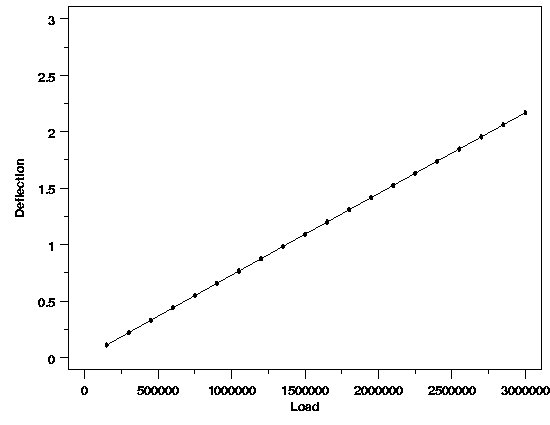
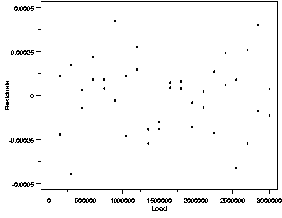
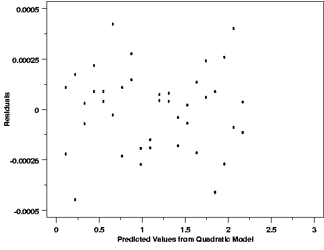
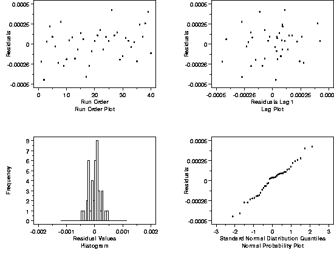

|
4.
Process Modeling
4.6. Case Studies in Process Modeling 4.6.1. Load Cell Calibration
|
|||
| The data with a quadratic estimated regression function and the residual plots are shown below. | |||
| Compare to Initial Model |  | ||
| This plot is almost identical to the analogous plot for the straight-line model, again illustrating the lack of detail in the plot due to the scale. In this case, however, the residual plots will show that the model does fit well. | |||
| Plot Indicates Model Fits Well |  | ||
| The residuals randomly scattered around zero, indicate that the quadratic is a good function to describe these data. There is also no indication of non-constant variability over the range of loads. | |||
| Plot Also Indicates Model OK |  | ||
| This plot also looks good. There is no evidence of changes in variability across the range of deflection. | |||
| No Problems Indicated |  | ||
| All of these residual plots have become satisfactory by simply by changing the functional form of the model. There is no evidence in the run order plot of any time dependence in the measurement process, and the lag plot suggests that the errors are independent. The histogram and normal probability plot suggest that the random errors affecting the measurement process are normally distributed. | |||

{kind=link}
{kind=link}
{kind=link}
{kind=link}